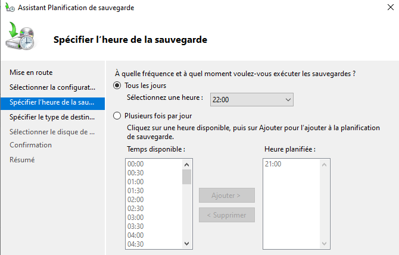
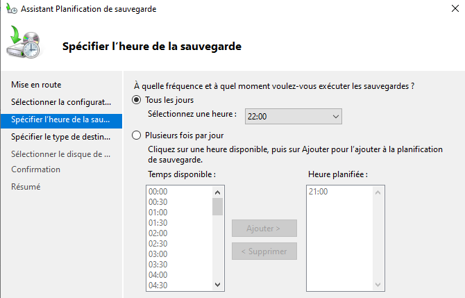

Mise en place de sauvegarde
Installation
Pour mettre place les sauvagardes il faut tout d'abord un espace de stockage dédié que nous avaons créer en partitionnant
le disque en 2 partie. Puis sur l'active directory nous installons le service de sauvegarde.
Pour cela, on exécute les commandes suivantes :
On clique sur Gérer > Ajouter des rôles et des fonctionnalités.
Puis on passe les premières pages de l'assistant jusqu'à arriver à Sélectionner les fonctionnalités.
On cochez sauvegarde windows server et on installe la fonctionnalité.
Puis on passe les premières pages de l'assistant jusqu'à arriver à Sélectionner les fonctionnalités.
On cochez sauvegarde windows server et on installe la fonctionnalité.
Configuration
Nous devons ensuite configurer les sauvegardes pour permettre qu'elle soit effectué de façon journalière.
Pour configurer ces sauvegardes, on exécute les commandes suivantes :
nous allons dans Outils>sauvegarde windows server>sauvegarde locale>planification de sauvegarde
Puis on sélection sauvegarde complet ainsi que l'heure de la sauvegarde

Puis sauvegarde vers un volume et installer
Puis on sélection sauvegarde complet ainsi que l'heure de la sauvegarde

Puis sauvegarde vers un volume et installer
La sauvegarde est maintenant en place